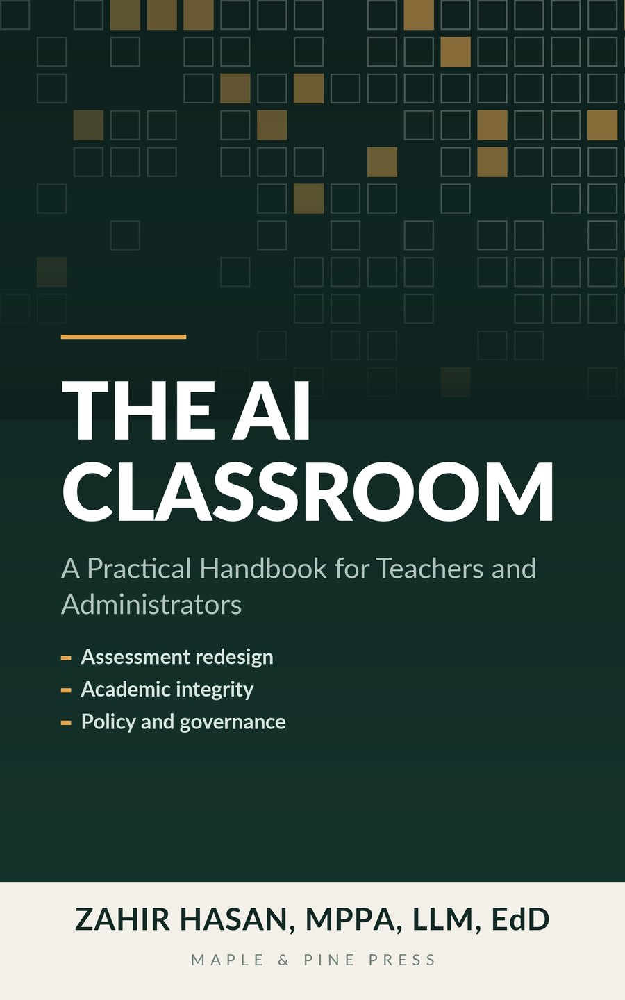

The AI Classroom
A Practical Handbook for Teachers and Administrators: Assessment Redesign, Academic Integrity, Policy and Governance

Most books about AI in education tell you what to think. This one tells you what to do on Monday.Three years after generative AI arrived in classrooms, roughly nine in ten students use it for assessed work and roughly two in ten teachers work somewhere that has told them the rules. The AI Classroom closes that gap.
Written by a university teacher with degrees in law, public policy and education, it reports what the research actually shows, separates legal obligation from good intention across six jurisdictions, and then hands over the documents. Nothing here is a blank template with brackets in it.
What is insideThe two-lane method — secure the few assessments that matter across a programme, and design the rest openly
Detection, honestly — what the tools do, what they cannot do, why they misfire on second-language writers, and the arithmetic that settles the decision for your institution
A fair-process framework for academic integrity that survives an ombudsman's review, with the burden of proof where it belongs
Two complete model policies, one for schools and one for universities, annotated with the reasoning behind every clause
Six worked assessment conversions, before and after, from primary to postgraduate
Three integrity case files with every document produced, including the case the institution got wrong and had to remedy
Eleven annotated letters, including the reply to a parent demanding that you use detection software
A vendor questionnaire, scorecard and twelve-clause contract library, plus a worked data protection impact assessment
Ten complete lesson plans and a scripted two-hour staff session
Four case studies carried end to end, with the documents
Current to August 2026, including the changes most guidance has not caught up with: the deferral of the EU AI Act's high-risk obligations for education to December 2027, the extension of the US web accessibility deadlines, and the retraction of the most-cited meta-analysis in the field.
Over 320 pages. Written for heads of department, deputy heads, provosts, teaching and learning leads, integrity officers, and any teacher who has been asked to hold a line the institution has not drawn.
Ebook and paperback · Maple & Pine Press
- Author
- Dr. Zahir Hasan
- Publisher
- Maple & Pine Press, Tokyo
- List
- Education & Practical Guides